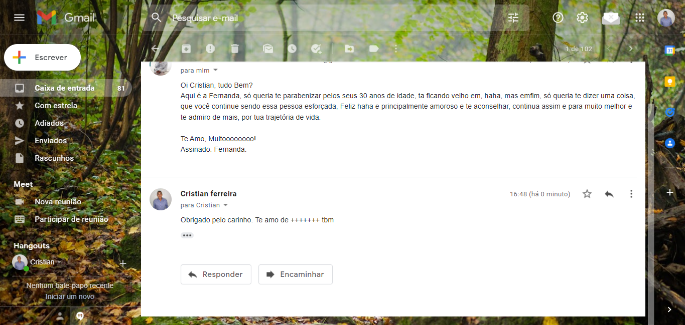
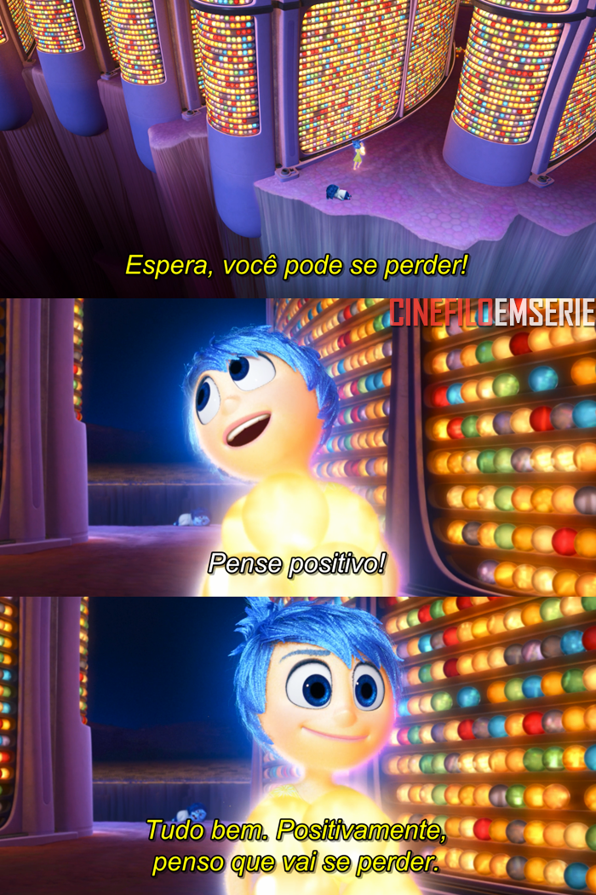

Vamos falar sobre seu futuro?
Pratos
Pratos que amamos


Pratos que estão em minha lista
.jpg)

Curiosidades
- Qual a sua melhor lembrança?
- Minha melhor lembrança, foi quando começei a tocar na igreja, saxofone em Mi, que sem dúvidas, foi até que bem dificil, mas conseguir passar no exame
- Viajar por todo o mundo ou ler todos os livros?
- Sem dúvidas viajar por todo o mundo, acredito que viajando, terei os mesmos aprendizados que teria lendo um livro, como por exemplo, um livro de historia que conta como ocorreu o olocaustro, promovido pelo nazismo, por que não, ir em uma viagem para um local onde ocorreu o olocaustro, la veria na pratica como ocorreu tal evento.
- Quem é a pessoa que te conhece melhor? Essa é a mesma pessoa que você conhece melhor?
- Minha mãe, HAHAHA, ela me conhece bem mesmo e conheço ela muito bem também
- Um dia mágico está chegando e nesse dia você poderá ter três horas a mais nesse dia. Você pode escolher o dia. Que dia você escolheria e o que você faria com esse dia?
- Não tenho um dia específico, mas seria o dia em que meu PAi se for, acho que iria com ele e toda minha família, em local muito bonito e alto e daria um abraço bem forte nele e falaria a seguinte frase, "pai obrigado por tudo, você pode ir em paz, porque, você foi ótimo pai aqui na terra e descupa, pois em muitas vezes, não dei muito valor, mas não se esqueça de me esperar la no Çeu, ta!.".
- Se você pudesse fazer as outras pessoas acreditarem em algo que você acredita, o que seria?
- Em Deus
- Você prefere receber elogios pelas suas realizações ou pelo seu caráter? Por quê?
- Pelo meu caráter, pois caráter é uma das principais virtudes de um indivíduo
músicas
- Zezé Di Camargo & Luciano - No Dia em Que Eu Saí de Casa
- Essa me trás muitas lembranças, em alguns anos atrás meu pai era caminhoneiro e ficava dias e até meses na estrada, e quando ele estava viajando e sempre que tocava essa musica lembrava dele, pois era música que mais escutava, naquele tempo.
- We Are The World 25 For Haiti
- Em meio a invasão Russa a Ucrania, essa música nunca foi tão atual, Acredito o que falta no mundo é amor ao proximo e paz
- Leandro Borges - Deus e Eu
- Nos dias em que estou triste, desanimado, essa música mexe comigo e me trás animo e força
- Kawe - Iluminado
- qualquer conquista, não sei se é um tique, mas lembro dessa música, como por exemplo o momento em que passei para o proa e quando conseguir meu primeiro emprego.

